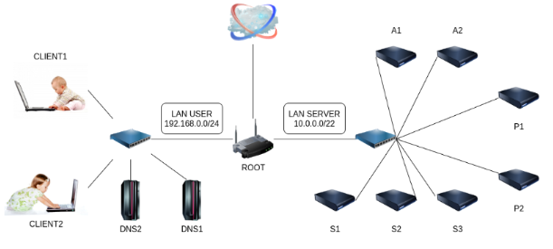

Outils Utilisés
-
Debian
-
Markdown
Compétences Acquises
- Réaliser un tutoriel détaillé
- Administration système
Objectif
En binôme, nous avons réalisé un rapport accessible et détaillé sur la configuration d'un serveur DNS afin de simplifier la gestion d'un sous-réseau. Tout cela grâce à la manipulation d'un environnement virtuel émulant un réseau de machines sous Debian appelé NEmu.
Installation de Serveur DNS
